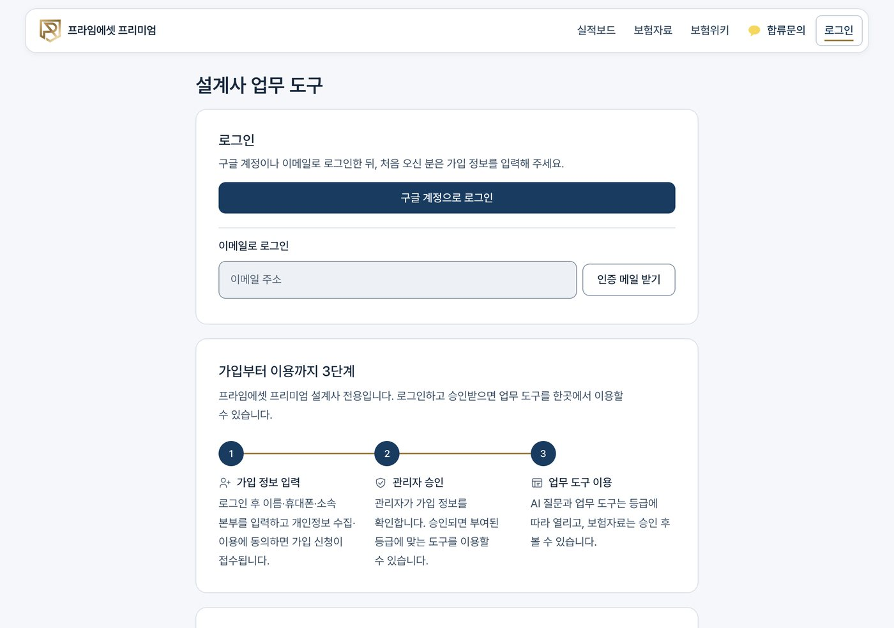
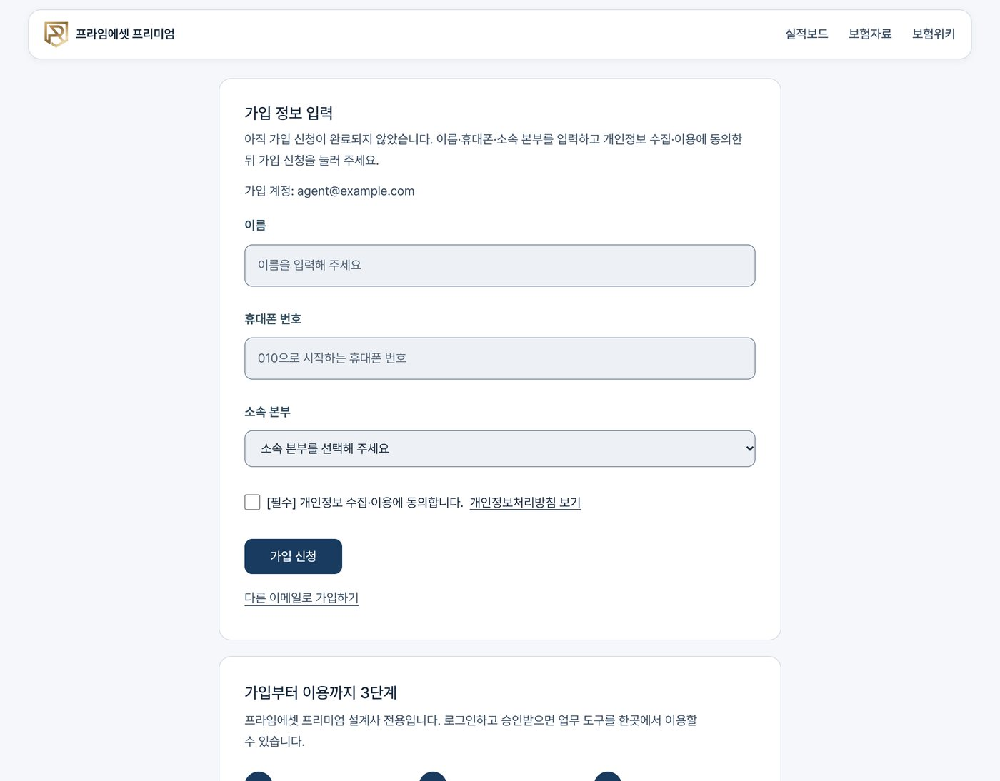
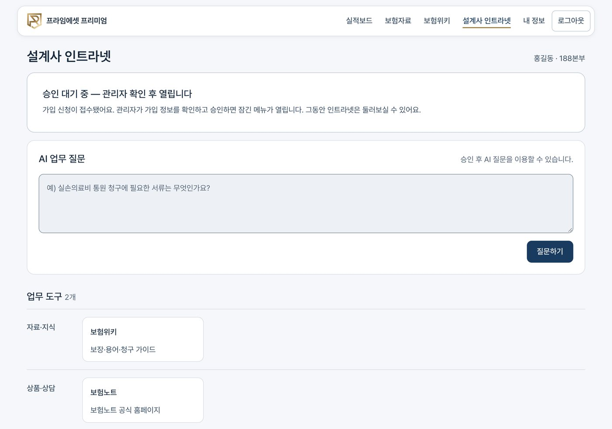
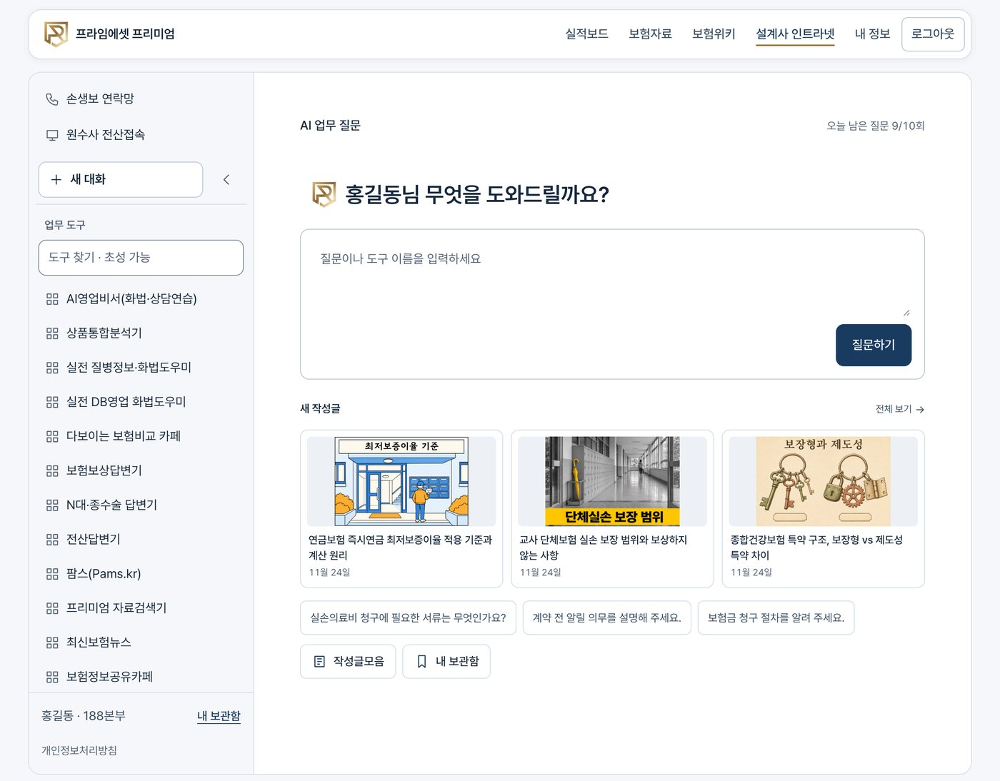
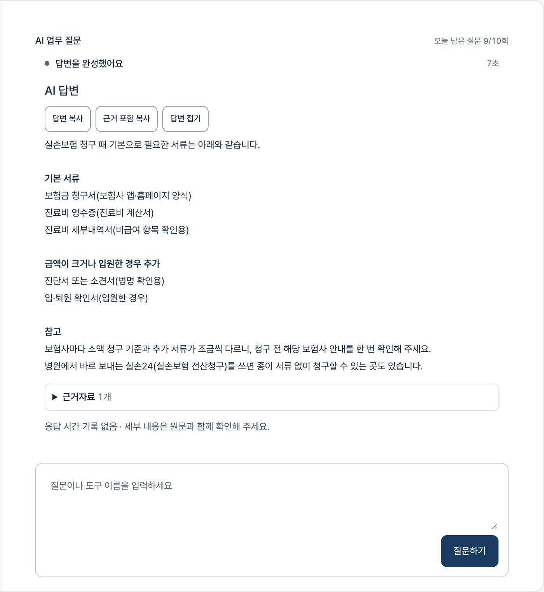
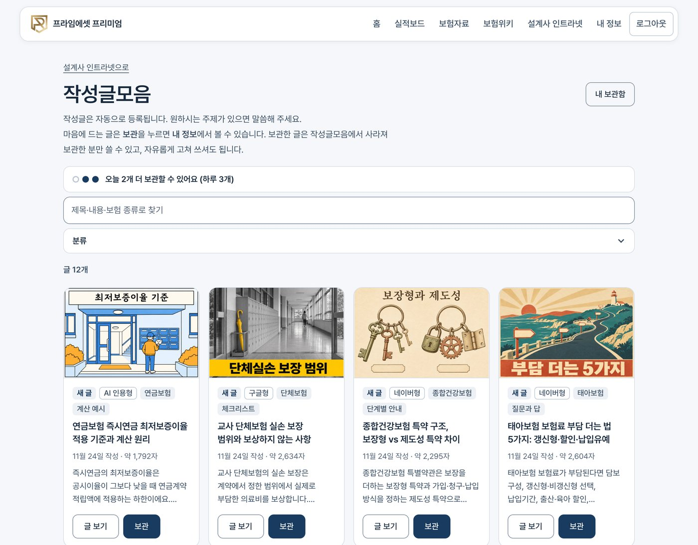
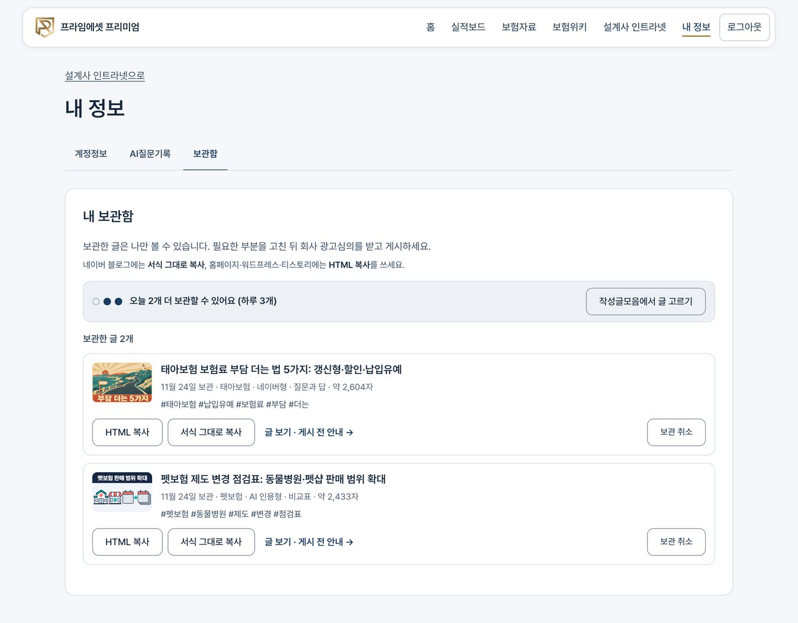
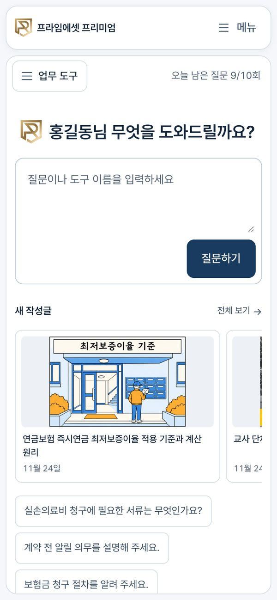

AI 업무 질문
약관·청구·상품 궁금증을 물으면 근거 자료와 함께 답합니다. 답변은 복사해서 바로 쓸 수 있어요.
01 · 소개
약관·청구·상품 궁금증을 물으면 근거 자료와 함께 답합니다. 답변은 복사해서 바로 쓸 수 있어요.
AI영업비서, 상품통합분석기, 보험보상답변기, 전산답변기, 원수사 전산접속까지 왼쪽 목록에서 바로 엽니다.
블로그에 올릴 보험 글을 매일 새로 준비합니다. 마음에 드는 글을 보관하고 복사해서 내 블로그에 씁니다.
설계사끼리 나눈 보험자료와 보장·용어·청구 안내를 찾아볼 수 있습니다.
02 · 가입
처음 한 번만 하면 됩니다. 승인이 끝나면 바로 이용할 수 있어요.
www.primeasset.info/members에 들어가서 구글 계정으로 로그인을 누르세요.
구글 계정이 없으면 이메일을 적고 인증 메일 받기 → 메일 속 링크를 누르면 됩니다.
네이버 카페·카카오톡 앱에서 링크를 누르면 구글 로그인이 막힐 수 있어요. 메뉴(⋮)에서 다른 브라우저로 열기를 누르세요.

이름 · 휴대폰 번호 · 소속 본부를 적고 개인정보 수집·이용에 동의한 뒤 가입 신청을 누르세요.


03 · 활용

AI 답변은 참고용입니다. 고객에게 안내하기 전에 약관·원문을 꼭 한 번 확인해 주세요.


올리기 전에 필요한 부분을 고치고, 회사 광고심의를 받은 뒤 게시해 주세요.


04 · 질문
프라임에셋 프리미엄 소속 설계사 전용입니다. 가입 신청 후 관리자 승인을 받으면 이용할 수 있어요.
인트라넷을 둘러보고 보험위키·보험노트는 볼 수 있습니다. AI 질문과 업무 도구, 보험자료는 승인 후 열립니다.
네. 등급에 따라 열리는 도구가 조금 다를 수 있습니다. 필요한 도구가 잠겨 있으면 문의해 주세요.
카카오톡·네이버 앱 안에서 열면 구글이 로그인을 막을 수 있습니다. 화면 메뉴(⋮)에서 다른 브라우저로 열기를 눌러 크롬·사파리·삼성 인터넷으로 여세요. 아니면 이메일로 로그인을 쓰면 됩니다.
필요한 부분을 고치고 회사 광고심의를 받은 뒤 올려 주세요. 내 경험을 한 문단 넣으면 더 좋은 글이 됩니다.
가입은 1분이면 끝납니다.
인트라넷 가입·로그인